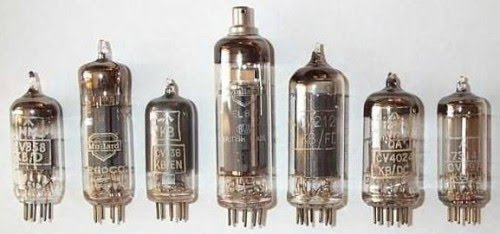

Válvulas
° O funcionamento dos primeiros computadores era conseguido através de válvulas termiônicas (ou, tubos de vácuo).
° Uma válvula, ou tubo de vácuo, é um componente eletrônico em forma de lâmpada, responsável por amplificar ou modificar um sinal elétrico.
° Este dispositivo foi fundamental para o desenvolvimento das telecomunicações e da computação.


ENIAC
° Foi o primeiro computador digital eletrônico de grande escala.
° Desenvolvido apedido do exército dos EUA para o laboratório de pesquisa balística.
° O ENIAC era uma máquina de 30 toneladas e ocupava uma área de 180m².
° Sua produção custou aproximadamente US$500mil na época.
° Possuia 70 mil resistores e 18 mil válvulas.